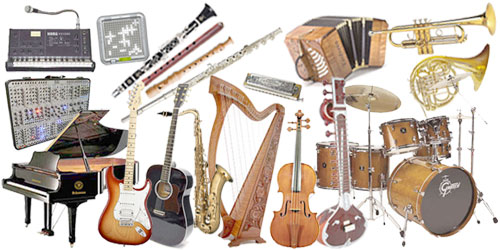
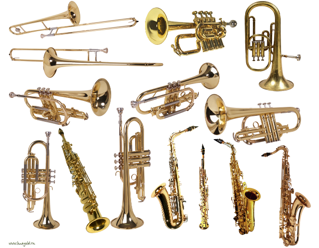
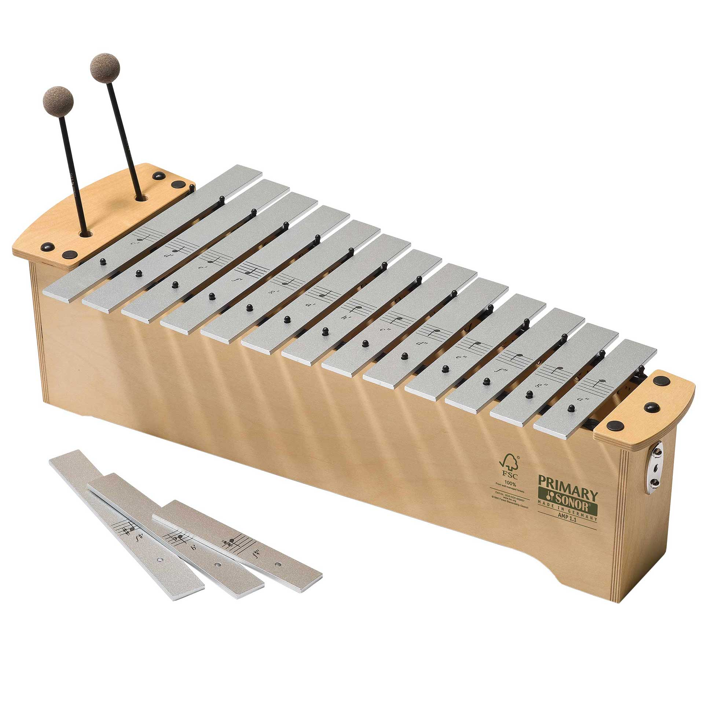
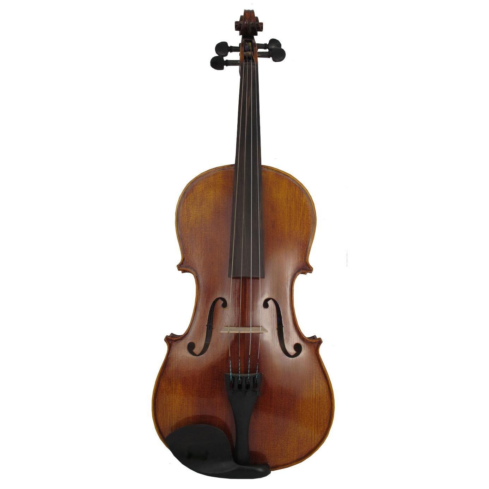

Вход
Музыкальные инструменты предназначены для извлечения различных звуков. Если музыкант играет неплохо, то эти звуки можно назвать музыкой, если же нет, то какафонией. В современной музыкальной практике инструменты делятся на различные классы и семейства по источнику звука, материалу изготовления, способу звукоизвлечения и другим признакам.
Духовые музыкальные инструменты (аэрофоны): группа музыкальных инструментов, источник звука которых — колебания столба воздуха в канале ствола (трубки). Классифицируются по многим признакам (по материалу, конструкции, способам звукоизвлечения и др.). В симфоническом оркестре группа духовых музыкальных инструментов подразделяется на деревянные (флейта, гобой, кларнет, фагот) и медные (труба, валторна, тромбон, туба).
Металлофоны - род музыкальных инструментов, основной элемент которых пластины-клавиши, по которым бьют молоточком.
Струнный музыкальный инструмент — это музыкальный инструмент, в котором источником звука (вибратором) являются колебания струн. Типичными представителями струнных инструментов являются классические скрипка, виолончель, альт, контрабас, арфа и гитара, а также множество самых разных народных инструментов: комуз, хомус, кылкыяк, кобыз, домбыра, гусли, балалайка, домра и другие.
 Жанры современной музыки